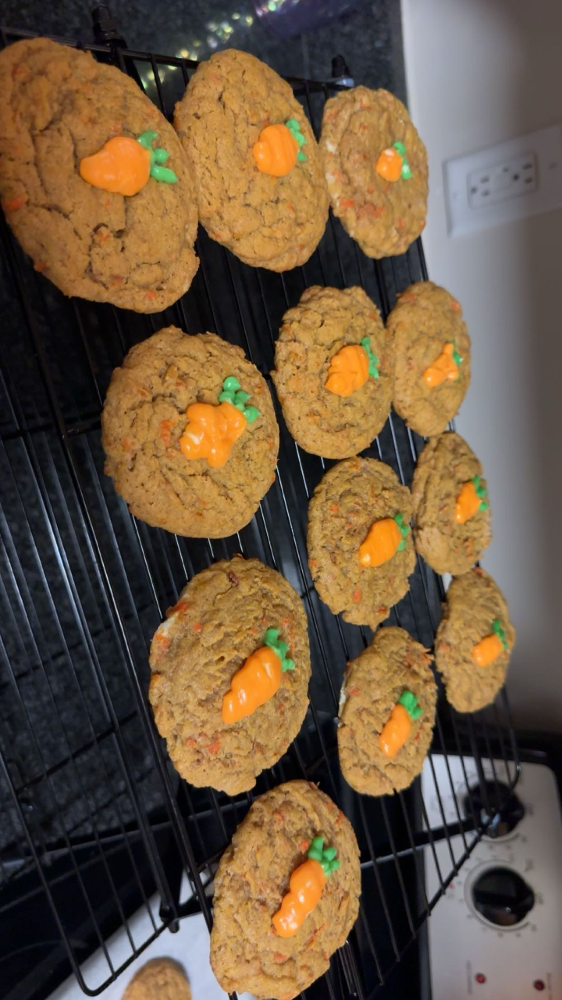

Carrot Cake Cookies
Ingredients
For the Filling
- 6 oz Cream cheese (room temperature)
- 3 tablespoons White granulated sugar
- 1 teaspoon Pure vanilla extract
For the Carrot Cookies
- 3 cups All-purpose flour
- 1 teaspoon Baking soda
- 1 teaspoon Salt
- 2 teaspoons Ground cinnamon
- ¼ teaspoon Ground nutmeg
- 1 cup Unsalted butter (melted and cooled)
- 1 cup Brown sugar (packed, light or dark)
- ½ cup White granulated sugar
- 1 cup Finely grated carrots (make sure to grate them fresh, don't use pre-shredded)
- 1 teaspoon Pure vanilla extract
- 2 Large egg yolks (room temperature)
For the Frosting
- 2 oz Cream cheese (room temperature)
- 2 tablespoons Unsalted butter (room temperature)
- ¾ cup Powdered sugar (sifted)
- 1 teaspoon Pure vanilla extract
Instructions
- Preheat the oven to 350°F (175°C) and line two baking sheets with parchment paper.
- In a medium bowl, beat together the cream cheese, granulated sugar, and vanilla extract for the filling until smooth. Set aside.
- In a large bowl, whisk together the flour, baking soda, salt, cinnamon, and nutmeg for the carrot cookies.
- In another bowl, mix the melted butter, brown sugar, and granulated sugar until well combined.
- Add the grated carrots, vanilla extract, and egg yolks to the butter-sugar mixture, stirring until combined.
- Gradually add the dry ingredients to the wet ingredients, mixing until a dough forms.
- Drop spoonfuls of dough onto the prepared baking sheets, making an indent in the center of each cookie with your thumb.
- Fill each indent with a small amount of the cream cheese filling.
- Bake for 12-15 minutes, or until the edges of the cookies are golden brown.
- While the cookies cool, prepare the frosting by beating together the cream cheese, butter, powdered sugar, and vanilla extract until smooth.
- Once the cookies have cooled, frost them with the cream cheese frosting.
- Enjoy your delicious carrot cake cookies!
